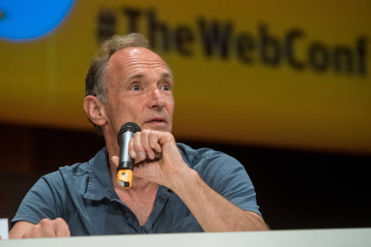

Введение
Интернет — это не просто технология, а глобальная социальная и информационная революция. Это система соединённых между собой компьютерных сетей, использующая протоколы TCP/IP для связи и обмена данными. Сегодня интернет является фундаментальной инфраструктурой современной цивилизации, кардинально изменившей способы общения, работы, обучения и развлечений.
Что такое интернет?
В своей основе интернет — это "сеть сетей". Он не принадлежит какой-либо одной организации или правительству. Он децентрализован, что делает его устойчивым и открытым. Он позволяет обмениваться данными, доступать к информации и использовать различные сервисы независимо от географического расположения, объединяя миллиарды устройств по всему миру.
Почему интернет важен?
Интернет демократизировал доступ к информации, ускорил научный прогресс, создал новые экономические модели и изменил социальные взаимодействия. Он стал платформой для глобальных движений, электронной коммерции, удалённой работы и образования, стирая границы между странами и культурами.
Этапы создания интернета
Путь интернета — это история десятилетий исследований, сотрудничества и случайных открытий.
Первые концепции
Джозеф Ликлайдер из MIT в серии меморандумов предложил концепцию "галактической сети". Он предвидел всемирную компьютерную сеть, где любой пользователь мог бы получать доступ к данным и программам с любого места, подобно электрической сети. В то же время, Леонард Клейнрок из UCLA разработал теорию пакетной коммутации, которая легла в основу передачи данных в сети.
Создание ARPANET
Финансируемое Агентством передовых оборонных исследовательских проектов США (DARPA) создание ARPANET стало первой практической реализацией пакетной коммутации. 29 октября 1969 года в 21:00 было отправлено первое сообщение. Чарли Клайн пытался отправить слово "LOGIN", но система рухнула после отправки букв "LO". Этот момент стал символическим рождением сети.

Электронная почта
Рэй Томлинсон, работая над ARPANET, создал первую программу электронной почты. Он выбрал символ "@" для разделения имени пользователя и имени хоста, что стало стандартом. Электронная почта стала первым "убийственным приложением" сети, продемонстрировав её практическую ценность для повседневной коммуникации.
Разработка TCP/IP
Винтон Серф и Роберт Кан опубликовали статью "Протокол для пакетной сетевой взаимосвязи", в которой описали протоколы TCP (Transmission Control Protocol) и IP (Internet Protocol). TCP отвечал за разбиение данных на пакеты и их сборку в правильном порядке, а IP — за адресацию и маршрутизацию этих пакетов. Эта архитектура позволила соединять разные, несовместимые сети в единую "сеть сетей" — интернет.
Переход на TCP/IP
1 января 1983 года ARPANET полностью перешла с протокола NCP на TCP/IP. Этот день считается "днём рождения интернета" в его современном понимании. Переход позволил ARPANET соединиться с другими сетями, включая CSNET, USENET и первые международные сети в Норвегии и Великобритании.
Создание Всемирной паутины
Британский учёный Тим Бернерс-Ли, работая в европейской лаборатории CERN, предложил проект "WorldWideWeb" (WWW). Он создал три ключевых технологии: язык гипертекстовой разметки HTML для создания документов, протокол передачи гипертекста HTTP для их запроса и универсальные идентификаторы ресурсов URL для их адресации. В 1991 году он разместил в интернете первый в мире веб-сайт, info.cern.ch.
Браузер Mosaic
Появление браузера Mosaic, разработанного в Национальном центре суперкомпьютерных приложений (NCSA), стало прорывом. Это был первый браузер с графическим интерфейсом, который позволял легко отображать изображения и текст на одной странице. Mosaic сделал веб доступным и понятным для обычных пользователей, не являющихся программистами, что вызвало взрывной рост популярности интернета.
Ключевые личности
Винтон Серф
"Отец интернета"
Американский учёный в области информатики, лауреат премии Тьюринга. Вместе с Робертом Каном разработал протоколы TCP/IP, которые являются архитектурной основой интернета. Его работа позволила создать единую, масштабируемую и устойчивую сеть из множества разнородных сетей. Серф продолжает работать над будущим интернета, включая межпланетный интернет (InterPlaNetary Internet).
- Соавтор протокола TCP/IP
- Президент ACM (2012-2014)
- Вице-президент и главный евангелист интернета в Google
Роберт Кан
Архитектор интернета
Американский инженер-электрик, который руководил проектом ARPANET в DARPA. Он осознал необходимость в создании протокола, который бы позволил разным сетям "общаться" друг с другом. Вместе с Винтоном Серфом он разработал TCP/IP, заложив фундамент для современной глобальной сети. Основал некоммерческую организацию Corporation for National Research Initiatives (CNRI).
- Руководитель проекта ARPANET
- Соавтор протокола TCP/IP
- Лауреат Президентской медали свободы (2005)
Тим Бернерс-Ли
Создатель Всемирной паутины
Британский учёный, который в 1989 году, работая в CERN, изобрёл Всемирную паутину. Он не только разработал ключевые технологии (HTML, HTTP, URL), но и создал первый в мире веб-сервер и браузер. Важнейшим его решением было не патентовать свои изобретения, а сделать их открытыми и свободными, что способствовало их повсеместному распространению. Он является директором консорциума W3C, который следит за развитием веб-стандартов.
- Изобретатель WWW
- Создатель HTML, HTTP и URL
- Директор W3C Consortium
Развитие интернета
1990-е: Рождение коммерческого интернета
Снятие ограничений на коммерческое использование интернета в 1991 году открыло двери для бизнеса. Появились первые интернет-провайдеры (ISP), такие как AOL и CompuServe. Поисковые системы (WebCrawler, Lycos, AltaVista, Yahoo!) помогали ориентироваться в растущем объеме информации. В 1994 году появились Amazon и eBay, заложив основы электронной коммерции. Браузер Netscape Navigator стал доминирующим, сделав веб по-настоящему массовым явлением.
2000-е: Социальные сети и Web 2.0
Эпоха "пузыря доткомов" (2000-2002) привела к краху многих компаний, но очистила рынок для более устойчивых бизнес-моделей. Появился термин Web 2.0, обозначающий переход к интерактивному, социальному вебу, где пользователи стали не только потребителями, но и создателями контента. Появились блоги, вики-энциклопедия Wikipedia (2001), социальные сети MySpace, Facebook (2004), Twitter (2006). YouTube (2005) революционизировал видеохостинг, а Google (основан в 1998) стал доминирующей поисковой системой и гигантской технологической корпорацией.
2010-е: Мобильный интернет и облачные технологии
Запуск iPhone в 2007 году и последующее распространение смартфонов и планшетов сделали интернет мобильным и постоянно доступным. Облачные вычисления (Amazon Web Services, Google Cloud, Microsoft Azure) изменили подход к хранению данных и запуску приложений, предоставив масштабируемую инфраструктуру по требованию. Появились стриминговые сервисы (Netflix, Spotify), мессенджеры (WhatsApp, Telegram) и приложения для совместной работы (Slack, Trello).
2020-е: Искусственный интеллект, IoT и новые вызовы
Современный интернет характеризуется повсеместным использованием искусственного интеллекта, который персонализирует контент, управляет рекомендательными системами и автоматизирует процессы. Расширяется Интернет вещей (IoT), подключая к сети бытовые приборы, автомобили и промышленное оборудование. Развитие 5G сетей обеспечивает высокую скорость и низкую задержку. Блокчейн-технологии предлагают новые подходы к безопасности и децентрализации. Вместе с тем, возникают новые вызовы: вопросы конфиденциальности данных, кибербезопасности, цифрового неравенства и борьбы с дезинформацией.
Рост количества пользователей интернета (млрд человек)
6 000 000 000
Пользователей интернета в 2026 году
6 000 000 000
Населения Земли использует интернет
1 850 000 001
Веб-сайтов существует сегодня
Учитывая наш=>
5 200 000 000
Активных пользователей социальных медиа
Дополнительные ресурсы
Для более глубокого изучения темы мы рекомендуем следующие материалы.
Википедия: История Интернета
Обширная статья, охватывающая все ключевые этапы, технологии и личности.
W3C: История Всемирной паутины
Официальная информация от создателя веба, Тима Бернерс-Ли, и его организации.
Computer History Museum
Статья о том, как появилась Всемирная паутина, от первых лиц.
Habr: Краткая история интернета
Популярное изложение истории интернета на русском языке.
Вывод
Интернет прошёл долгий путь от экспериментальной военной сети до глобальной системы, изменившей все аспекты человеческой жизни. Его история — это история сотрудничества, инноваций и стремления к соединению людей по всему миру.
Значение интернета для человечества
- Образование: Беспрецедентный доступ к знаниям и образовательным ресурсам, возможность дистанционного обучения.
- Экономика: Глобализация рынков, электронная коммерция, гиг-экономика, удалённая работа и создание новых отраслей.
- Коммуникация: Мгновенная связь между людьми независимо от расстояния, сохранение социальных связей.
- Культура: Обмен культурными ценностями, глобальные субкультуры, новые формы искусства и развлечений.
- Политика: Повышение прозрачности власти, гражданский активизм, но и новые инструменты для манипуляции общественным мнением.
- Наука: Мгновенный обмен научными данными, совместные исследования, доступ к мощным вычислительным ресурсам.
Будущее интернета
Интернет продолжает развиваться с невероятной скоростью. Искусственный интеллект, квантовые вычисления, расширенная и виртуальная реальность, децентрализованные сети — всё это формирует следующую эволюцию интернета. Однако основополагающие принципы, заложенные его создателями — открытость, доступность и свобода информации — остаются незыблемыми. Задача современного общества — сохранить эти принципы, решая при этом новые сложные вызовы безопасности и этики.
"Интернет — это не просто технология, это проявление человеческого духа сотрудничества и стремления к знаниям." — Тим Бернерс-Ли